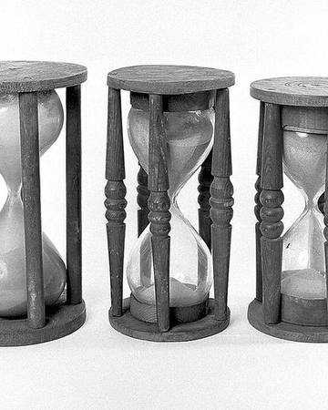
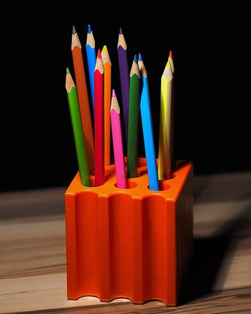
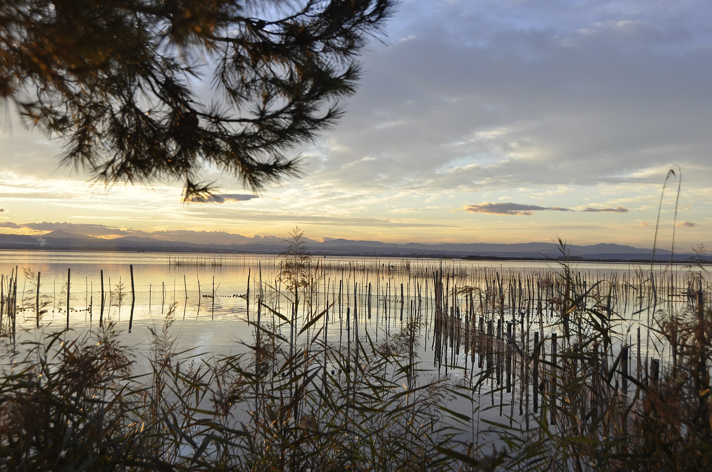
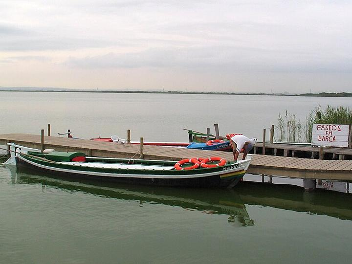

Quatre parades
Cada sessió fa la mateixa ruta curta. Quan arribes al refugi, la sessió s'acaba: no n'hi ha «una més».

Cinc preguntes del que ja saps, barrejades. Es corregeixen al final.
Una sola cosa nova, amb una foto, els passos i un exemple resolt.

Primer amb pistes i després tot sol. Cada errada ve amb la seua explicació.

Un resum, les estrelles guanyades i fins demà. Descansar també ajuda a recordar.
El camí de la foto és als Dolomites. El de la Motxilla té cinc rutes: Mates, Valencià, Medi, Castellano i English.
Prova-ho
Toca una peça i respon una pregunta de la Motxilla.
Per què funciona
En aules reals de Primària i Secundària, aquestes pràctiques tenen efectes modestos però reals (recuperació g = 0,37; espaiat g = 0,20; intercalat g = 0,40, Ruitenburg i col. 2026; domini ≈ 0,5 DE, Kulik i col. 1990; correcció d = 0,48, Wisniewski i col. 2020). La Motxilla no promet millors notes ni més intel·ligència.
Una setmanaamb la Motxilla
Comença avuiExemple d'una setmana. Cada alumne té la seua, segons el que encerta.
Per a les famílies
Tot el que la Motxilla fa, i el que no fa.

Obri la motxilla
Crea un perfil amb un àlies, tria una foto i fes la primera sessió. Si l'obris en una tauleta, pots afegir-la a la pantalla d'inici.